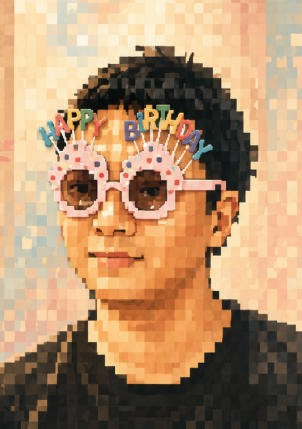

Sep 2024 — Jun 2027
Expected
M.Eng. in Computer Technology
Sichuan University · College of Computer Science · Chengdu, China
- GPA: 3.65 / 4.00.
- First-Class Graduate Academic Scholarship.
Sichuan University · College of Computer Science
M.Eng. candidate in Computer Technology
Research interests in Edge Intelligence, Federated Learning, Computer Vision, Large Language Models, and Embodied Intelligence.

01 · Profile
Master's candidate in Computer Technology at Sichuan University with research experience in edge intelligence, federated learning, computer vision, and energy-efficient computing.
First author of peer-reviewed work on semi-asynchronous federated prototype learning and low-power real-time scheduling. Experienced in PyTorch-based algorithm development, heterogeneous edge systems, DVFS-aware optimization, and large language model fine-tuning and deployment.
02 · Academic Path
Sichuan University · College of Computer Science · Chengdu, China
Sichuan University · College of Computer Science · Chengdu, China
03 · Research
Researcher and Developer · Project Repository ↗
First Author and Researcher · Sichuan University
First Author and Researcher · Sichuan University
04 · Scholarly Output
Wendian Luo, Tong Yu, Junnan Li, Shengxin Dai, Bing Guo, and Zhuohang Jiang, “TMSC: A Tri-Regional Mask-Guided Semantic Calibration Framework for Zero-Shot Anomaly Detection,” Pattern Recognition.
Wendian Luo, Tong Yu, Shengxin Dai, Bing Guo, Xuesen Lin, and Yanglin Pu, “Semi-Asynchronous Energy-Efficient Federated Prototype Learning for End-Edge-Cloud Architectures,” Future Generation Computer Systems, vol. 179, Art. no. 108351, 2026.
doi:10.1016/j.future.2025.108351 ↗Wendian Luo, Shengxin Dai, Cheng Dai, Bing Guo, Sherif Moussa, and Mubarak Alrashoud, “BDTest: A Diversity-Oriented Test Case Generation Framework for Deep Neural Networks in 6G-IoT,” IEEE Internet of Things Journal, vol. 13, no. 5, pp. 8190–8203, 2026.
doi:10.1109/JIOT.2025.3616358 ↗Shengxin Dai, Zheng Luo, Wendian Luo, Siyi Wang, Cheng Dai, Bing Guo, and Xiaokang Zhou, “Energy-Efficient Inference With Software–Hardware Co-Design for Sustainable Artificial Intelligence of Things,” IEEE Internet of Things Journal, vol. 11, no. 24, pp. 39170–39182, 2024.
doi:10.1109/JIOT.2024.3482288 ↗Wendian Luo, Shengxin Dai, and Bing Guo, “A Low Power Scheduling Algorithm for Segmented Frequency Scaling,” in 2025 IEEE International Symposium on Parallel and Distributed Processing with Applications (ISPA), pp. 828–837, 2025.
doi:10.1109/ISPA67752.2025.00112 ↗05 · Industry
Media Intelligence Laboratory, Chengdu Sobey · Chengdu, China
06 · Selected Work
Project Developer · ROSMASTER M3 PRO
Primary Developer · 12th China Software Cup
Core Team Member · Sichuan University
07 · Toolbox
08 · Recognition
Sichuan Province
Sichuan University
12th China Software Cup
Chinese College Students Computer Design Competition
Sichuan University